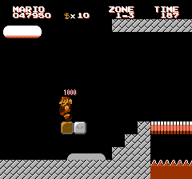
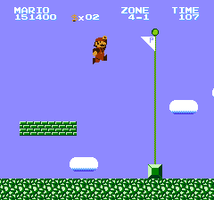
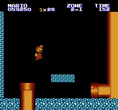
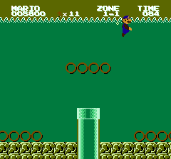

Supersonic Mario Bros.
Jumping on to your Family Computer on September 13, 1992!
   
Do you have what it takes to save the Mushroom Princess?
You’ll have to think fast and move even faster to complete this quest! King Koopa and Sonic the Hedgehog have teamed up to capture the princess and defeat Mario once and for all. It’s up to you to rescue her from their clutches before time runs out.
But it won’t be easy. To get the princess, you’ll have to blaze through hills, navigate dangerous seas, infiltrate fortresses, and more!
It’s another non-stop adventure from the SUPERSONIC MARIO BROS.!
Download an exclusive World 4 prototype here.
© TheWindowsPro98 2017-2022 for the hack
© Nintendo 1985-2022 for Mario, the NES, the boxart (site base), and the original game
© SEGA 1991-2022 for Sonic the Hedgehog